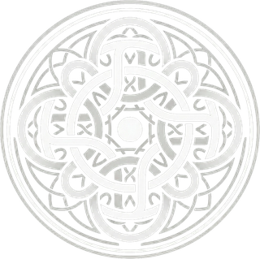

Carousel dan cover reels di grid profil, palet hitam-merah. Ganti dunia visual, font, pola cover, cara cover reels, dan gaya nomor di panel bawah, lalu salin pilihannya lewat tombol di bawah. Teks di cover adalah contoh, belum naskah final.
Dunia visual
Font pilihan
Merah
Pola cover
Reels format #2 (teks diam)
Visual reels #2 teks penuh
Reels jendela klip
Ruang kosong di bawah elemen
Glow kata merah di slide terang
Gaya nomor slide
Tampilan Instagram
Dari feed Kallaway: satu keluarga visual
Pengamatan dari empat screenshot yang kamu kirim. Ini acuan tampilan, bukan bukti performa. Semua kalimat baru di bawah hanya contoh desain.
Judul → visual → penjelasSans tebal memberi konteks; serif miring menekan frasa inti. Diagram menjadi satu gambar utama dengan sedikit label, bukan kumpulan kotak berisi paragraf.
Warna punya tugasHitam, putih, dan merah menyatukan feed. Hijau membedakan respons; kuning menandai jeda keputusan; oranye menyorot satu tahap. Cukup satu warna tambahan per frame.
Reels tetap terasa serumpunDi referensi, judul dan grafis menjaga identitas meski frame bawah berisi pembicara. Untuk reels teks auraneuro, pakai judul yang sama, isi ringkas, lalu CTA; diagram kecil hanya bila membantu.
Cover carousel: diagram sebagai visual utama
Empat pilihan komposisi. Feed memakai tiga diagram dari 12 postingan (25%, di bawah batas 30%); pilihan D disimpan di sini. Label cukup pendek untuk dibaca sekilas; uraian lengkap masuk slide berikutnya. Warna tambahan masih usulan.
Reels teks penuh: sekeluarga dengan carousel
Varian A–C tetap disimpan: paragraf terbuka, panel, dan figur samar. Figur C sekarang berada di tengah potongan feed. Ketiganya memakai teks yang sama agar tampilannya bisa dibandingkan. Varian baru dengan ilustrasi topik ada di bawah; ini frame mockup, belum video.
Dari dua referensi The Brain Lab: judul memberi konteks, ilustrasi memperlihatkan hubungan, dan paragraf menerangkan makna. Di sini identitas auraneuro tetap: Arimo + Instrument Serif, glow, hitam–merah–putih, paragraf rata kanan–kiri, CTA di tengah.
D menaruh ilustrasi di bawah paragraf. E menaruh visual di antara judul dan paragraf. F menggunakan objek dan alur pada bidang cahaya tipis. Teks lengkap tetap ada. Ganti “Visual reels #2 teks penuh” untuk membandingkan dengan varian klasik di feed.
Uji berdampingan di feed
Carousel figur, diagram, reels #1, dan reels #2
Judul memakai Arimo Bold + Instrument Serif dengan glow yang sama. Diagram mengambil posisi visual figur. Reels #2 mempertahankan model akun auraneuro: judul, paragraf lengkap, lalu “Cek caption!”, seluruh teks tampil bersamaan.
Warna latar contoh tetap 50% gelap, 25% merah, 25% terang. Kuning, hijau, dan oranye hanya muncul pada bagian diagram yang perlu dibedakan; judul utama tetap mengikuti warna auraneuro.
Porsi diagram dibatasi: 3 dari 12 postingan (25%, tidak melewati 30%). Empat carousel figur, dua reels #1, dan tiga reels #2 tetap hadir. Pilihan diagram D hanya ada di galeri terpisah.
Rekomendasi reels #2: satu paragraf sekitar 45–65 kata seperti tiga contoh akun yang ditinjau, body ±42px, judul lebih ringkas daripada cover bergambar. Teks tetap diam; gerakan latar dibuat pelan saat produksi video. Durasi menyesuaikan waktu baca, bukan otomatis meniru durasi lama.
Ruang penting reels ditempatkan pada y≈348–1470 dari kanvas 1080×1920, agar judul, isi, dan CTA tetap masuk potongan feed serta aman dari caption. Simulasi grid di kiri memakai frame isi langsung.

auraneurooControl Domination · psikologi pengaruh yang etismockup, angka profil tidak ditampilkan
POSTINGANREELSTAG
Cover penuh: gelap, merah, terang
Kanvas 1080×1440 (3:4). Arsiran merah = 120px kanan yang dikosongkan untuk penanda 1/10 Instagram.
Detail grain ukuran asli
Potongan cover di ukuran 1080 piksel penuh, seperti saat dibuka di HP. Geser di dalam kotak untuk melihat bagian lain. Di grid, butirnya ikut mengecil.
Reels: frame asli dan potongan grid
Reels 9:16 di grid terpotong 240px atas dan bawah (garis putus-putus). Logo, judul, dan sosok disusun di dalam area itu.
Variasi grain dan cahaya
Seluruh latar kena grain super tipis; satu area (pojok, sisi, atau keempat ujung) diberi grain lebih tebal yang menipis bertahap. Variasi penuh dibuat sangat tipis. Butirnya halus dan selalu di belakang teks dan sosok. Di grid, tiap cover memakai variasi berbeda secara bergilir.
Grain per area: satu bagian kena grain lalu menipis, bagian lain polosCahaya di belakang sosok (pola kallaway)
Ruang kosong di bawah elemen pendek
Elemen lebar (otak, dokumen) menyisakan ruang di bawahnya. Gradasi dipakai sebagai variasi: bawaan panel "Bervariasi" memberi gradasi di sebagian cover saja supaya feed tidak monoton. Slide 2 dan seterusnya tidak diberi gradasi.
Aturan ukuran judul cover
Seperti kallaway, ukuran judul tidak sama di semua cover. Patokannya panjang hook (jumlah huruf seluruh judul). Frasa serif selalu dicoba muat 1 baris dulu; kalau hasilnya terlalu kecil, dipecah jadi 2 baris yang lebih besar. Kutipan dalam tanda petik selalu utuh di satu jenis huruf.
Frasa serif: tiap baris dipaskan sendiri ke ±70% lebar kanvas (sama seperti IDEA / MACHINE dan TOP 1% / AUTHORITY di kallaway), jadi baris pendek tampil lebih besar. Frasa >11 huruf dipecah jadi 2 baris seimbang.
Pendek (≤34 huruf): sans 63px, serif maks 280px.
Sedang (35–50): sans 56px, serif maks 205px.
Panjang (51–66): sans 50px, serif maks 150px.
Sangat panjang (>66): sans 45px, serif maks 120px. Lebih dari ini, potong hook-nya.
Jarak: judul mulai ±108px dari atas; antarbaris judul ±32px; judul ke gambar ±52px. Ukuran dan jarak masih bisa direvisi.
Sans dominan: tiga uji hook
Frasa inti menjadi fokus lewat ukuran dan satu aksen merah. Konteks tetap netral, dengan jarak antarbatas huruf yang sama seperti contoh aturan judul cover. Tiga hook ini adalah contoh uji tampilan.
Variasi cover sesuai hook
Body cover menempel dekat judul dan lebih kecil. Pada cover berkotak, serif menjadi fokus utama; kotak kecil hanya memberi konteks. Teks berikut contoh untuk menilai desain.
Variasi teks dan perbandingan slide isi
Skala baca contoh ini (kanvas 1080): judul ±78px, subheading ±60px, body ±42px. Ukuran mengikuti peran, bukan jumlah ruang kosong; kalau teks padat, pecah slide alih-alih mengecilkan body. Nomor untuk 1–4 langkah ±99px, tebal dan berpendar. Perbandingan dipusatkan; teks di dalam kotak tetap rata kiri.
Font pilihan: Arimo
Heading memakai Arimo Bold. Isi memakai Arimo reguler, dengan huruf tebal untuk penekanan sesuai konteks. Kata kunci serif tetap Instrument Serif Italic. Potongan Kallaway di bawah menjadi acuan visual.
Format storytelling: pembahasan kritis
Untuk topik gelap dan padat. Alurnya: cover provokatif → adegan → eskalasi → pola terbongkar → nama mekanismenya → siapa yang jadi target → kebenaran yang tidak enak → cara menangkis → kalimat penutup → CTA. Selingan slide gelap, grain penuh, merah dominan, dan terang menjaga ritme saat digeser.
Diagram penjelas untuk slide isi
Diagram dipakai untuk memperjelas hubungan atau urutan: dua hal yang bergabung, cabang, siklus, atau sebab–respons. Judul memberi konteks, gambar menjelaskan, kalimat bawah memberi makna. Contoh isi berikut belum naskah final.
Motion cover: animasi lapisan
Gerak tanpa AI video: lapisan gambar digerakkan dengan kode, nanti dirender jadi MP4 4–5 detik lewat HyperFrames. Kilauan cahaya yang menyapu cover sudah dihapus. Gerak lain tetap dipakai. Gerakan yang mengubah bentuk tubuh tetap butuh Higgsfield/Kling.
Slide isi: format listicle
Versi gelapVersi terang
Variasi tekstur marmer
Selain marmer merah, marmer bisa dipakai di warna lain sebagai variasi slide isi. Tetap dalam palet hitam-merah: hitam berurat putih, hitam berurat merah, putih berurat abu, dan merah tua.
Catatan
Merah usulan #C80A0A (dihitung): di latar hitam 3,2:1 (lolos batas 3:1 untuk teks besar; #AA0202 cuma 2,5:1), teks putih di atasnya 6:1, di latar terang 4,6:1. Masih merah murni, tidak bergeser ke oranye seperti #E63A2E. #D01010 sedikit lebih terang (3,4:1).
Ukuran huruf diperkecil sesuai permintaan: judul cover 80px, judul slide 73–91px, teks isi 46px. Ini sedikit di bawah minimum di aturan-layout-safe-zone.md (judul 96px, isi 48px); perlu dicek di layar HP.
Tanpa nama dan logo akun di carousel (keputusan owner 16 Okt 2026).
Gambar: domain publik / CC0 (The Met Open Access, Wikimedia Commons). Sumber di 06_Automation_Kit/aset_mockup/KREDIT.md.